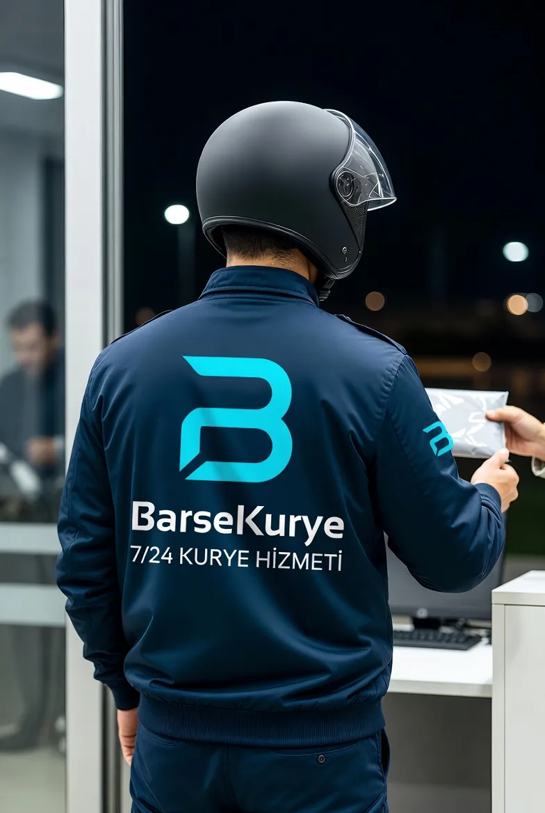

7/24 Kurye
Kurye ihtiyacı mesai saatiyle sınırlı değil. Gece devreye giren bir üretim hattı, sabaha yetişmesi gereken bir evrak, hafta sonu nöbetteki bir eczane ya da gece yarısı biten bir çekim — hepsi mesai dışında kurye ister. Barse Kurye'de gece ve hafta sonu ayrı bir hizmet değil, aynı operasyonun devamıdır.

Gece kurye nasıl çalışıyor?
Gece saatlerinde trafik açıldığı için teslim süreleri gündüze göre belirgin biçimde kısalır; gündüz 70 dakika süren bir yaka geçişi gece çoğu zaman 35–45 dakikada tamamlanır. Buna karşılık adres bulmak zorlaşır: kapalı iş yerleri, kilitli site girişleri ve boş resepsiyonlar gece teslimatın asıl sorunudur.
Bu yüzden gece işlerinde teslim alacak kişinin telefonunu ve varsa güvenlik bilgisini baştan alıyoruz. Alıcıya ulaşılamayan durumlarda kurye gönderiyle birlikte bekler; ne yapılacağına siz karar verene kadar gönderi kuryede kalır, kapıya bırakılmaz.
Gece ve hafta sonu ücret farkı
Farklar sabit tutardır, yüzde üzerinden artmaz. İki durum birlikteyse farklar toplanır.
Gece ve hafta sonu en çok kimler kurye çağırıyor?
Mesai dışı taleplerin büyük bölümü belirli sektörlerden geliyor.
Nöbetçi eczane ve hastane
Reçeteli ilaç, tahlil numunesi ve acil rapor teslimatı; gece en sık gelen taleptir.
Vardiyalı fabrika
Gece vardiyasında biten parça, kalıp ve numune gönderileri.
Prodüksiyon ve ajans
Çekim sonrası disk, ekipman ve baskı provası teslimleri.
Otel ve konaklama
Misafire ulaştırılacak belge, unutulan eşya ve acil gönderiler.
Gece işlerinde dikkat ettiğimiz noktalar
Gece teslimatın kuralları gündüzden farklı; bunları baştan konuşuyoruz.
- Teslim alacak kişinin telefonu mutlaka alınır
- Site ve iş merkezi girişlerinde güvenlik prosedürü önceden sorulur
- Alıcıya ulaşılamazsa gönderi kapıya bırakılmaz, kurye bekler
- Gece tarifesi çıkıştan önce bildirilir, teslimden sonra sürpriz ücret çıkmaz
- Gece güzergâhları açık olduğu için süre tahminleri gündüze göre daha isabetlidir
7/24 Kurye hakkında sorular
Gece kaça kadar kurye gönderiyorsunuz?
Saat sınırı yok; operasyonumuz 7/24 açık. Gece 03:00'te de talep alıyor ve kurye yönlendiriyoruz.
Hafta sonu kurye ücreti ne kadar?
Cumartesi ve Pazar günleri normal tarifeye +100 ₺ eklenir. Aynı gün gece saatlerindeyse gece farkı da eklenerek toplam +200 ₺ olur.
Resmi tatillerde çalışıyor musunuz?
Evet, resmi tatillerde de kurye yönlendiriyoruz. Tatil günlerinde hafta sonu tarifesi geçerlidir.
Gece teslimat daha mı hızlı?
Genellikle evet. Trafik açık olduğu için özellikle yaka geçişli güzergâhlarda süre gündüze göre belirgin biçimde kısalır.
Gece gönderi güvenli mi?
Gönderi alımdan teslime kadar kuryenin sorumluluğundadır ve alıcıya ulaşılamadığında kapıya bırakılmaz. Teslim tamamlandığında bilgi veriyoruz.
Birlikte en çok kullanılan hizmetler
Yoğun çalıştığımız bölgeler
Gönderiniz hazır mı?
Alım ve teslim adresini iletin; net fiyatı söyleyip kuryeyi hemen yönlendirelim.